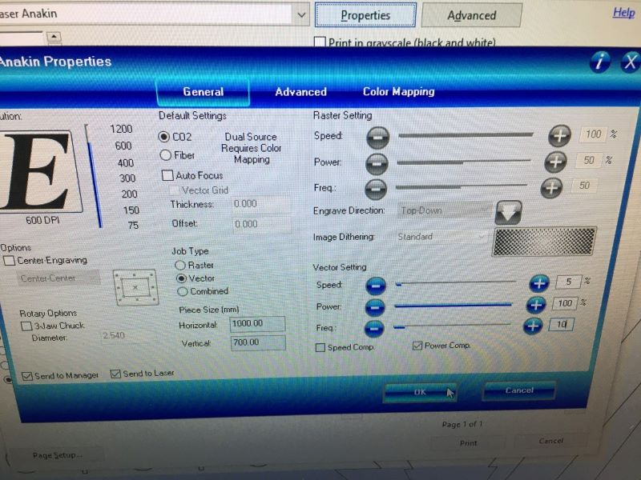
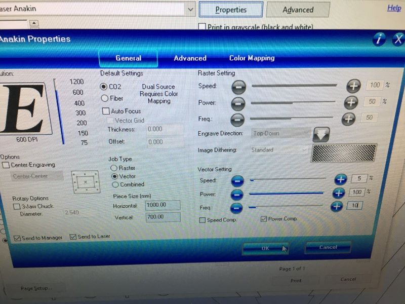
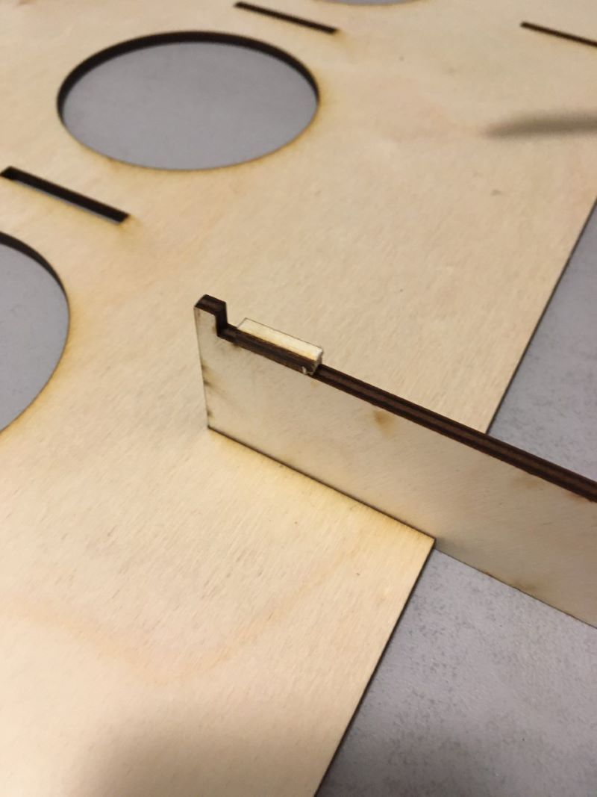

Verkefni 2 - Tölvustuddur skurður
Um verkefni
Verkefnalýsingin hljóðaði svo:
Hannaðu parametrískt, geirneglt (pressfit) módel af byggingar einingum. Módelið þarf að vera skalanlegt þannig hægt sé að stilla kerf og efnisþykkt, ásamt stærðum á flötum, með því að vinna með parametrískar breytur.
Undirbúningur
Ég byrjaði á að pæla í hugmyndum að verkefni sem ég gæti tekið mér fyrir hendur og ákvað að lokum að hanna vínrakka sem lítur út eins og grenitré svo að ég geti sjálfur ákveðið hvort ég vilji rauð eða hvít jól. Ég átti núþegar Fusion 360 en þurfti líka að sækja Inkscape svo hægt væri að undirbúa lokateikningu fyrir laser skurð.
Hönnun í Fusion 360
Það fyrsta sem ég gerði í Fusion var að fara inn í Modify-->Parameters og skilgreina þar allar breytur og lengdir sem ég notaði í teikningunum mínum jafn óðum. þetta er eiginlega nauðsynlegt þegar maður er að teikna í CAD forritum því ef að það þarf seinna að breyta t.d þvermáli gatanna þá er einfaldlega hægt að breyta gildinu á þvermálinu innan parameters og við það uppfærast öll götin sjálfkrafa í stað þess að eyða óratíma í að eyða götunum og teikna þau aftur
Hönnunin sem ég endaði á að nota innihélt tvær stórar grenitréslaga plötur til að halda uppi vínflöskunum, tveim botnplötum sem eru pressfitted á stóru plöturnar sem veita stöðugleika og þrjár minni plötur sem tryggja það að plöturnar hrynji ekki sundur. Þar sem efnið mitt var takmarkað við 700mmx1000mmx4mm plötu þá ákvað ég að hanna rakkinn þannig að hann væri 60cm á hæð og 60 í breidd sem gaf mér þá nóg pláss til að rúma 6 flöskur.
Stórar plötur
Tilgangur stóru platanna er að halda á vínflöskunum og gefa rakkanum grenitrés útlitið sitt. Þær eru báðar 60cm að hæð og 60cm að breidd. Það eru 5 raufar í báðum plötum þannig að styrktarplöturnar og botnplöturnar nái að tengja allt saman. Einn standurinn er svo með lítil göt til að halda uppi flöskuhálsnum en hin er með stór göt svo hægt sé að renna flöskunni í gegn og halda henni uppi á breiðara enda.
Botnplötur
Tilgangur botnplatanna var að halda stóru plötunum uppi og í plani áskamt því að dreifa álaginu frá þyngd flaskanna og veita aukin stöðugleika. Plöturnar eru 300mmx50mmx4mm
Styrktarplötur
Tilgangur styrktarplatanna var að sjá til þess að rakkurinn gæti ekki hrunið í sundur. Til þess að þjóna þeim tilgang var lítill krókur settur á enda platnanna. Plöturnar eru í kringum 212mmx33mmx4mm með 4mmx5mm kubbum sitthvorumegin sem virka sem krókar
Assembly
Næst henti ég í assembly fyrir plöturnar sem ég var búinn að teikna til að sjá betur fyrir mér hvernig loka hönnunin liti út áður en ég færi í næsta skref. Ég mældi líka nokkrar vínflöskur sem ég átti heima og bjó til módel af flösku til þess að ég gæti stillt gatastærðina mína rétt
Undirbúningur fyrir Inkscape
Þegar ég var orðinn sáttur við hönnunina mína þá fór ég í að undirbúa það sem ég var búinn að teikna fyrir Inkscape. Ég byrjaði á að fletja út assembly-ið. Síðan bjó ég til sketch og stillti kerfið mitt. Næst exportaði ég teikninguna sem DXF eins og sýnt er í þessu myndbandi
Inkscape
Ég byrjaði með að setja inn DXF skránna af rakkanum mínum. Svo þurfti ég að eyða auka línunum sem mynduðust þegar ég bætti við kerf þ.e innri línurnar. Síðan athugaði ég hvort allar línur væru ekki örugglega réttar og hélt svo áfram.
Laserskurður
Eftir að ég var búinn að gera það sem þurfti í inkscape vistaði ég skjalið mitt sem pdf, setti það á minnislykil og inn í tölvuna fyrir laser skerann Anakin. Þar stillti ég hann á viðeigandi stillingar og hóf skurðinn
 

Niðurstaða
Eftir skurðinn endaði ég með þessar plötur. Ég setti þær saman og úbbs gleymdi alveg að pæla í því að plöturnar gætu auðvitað líka dottið saman. En það var ekkert stórmál og ég lagaði vandamálið með því að nota superglue og líma nokkra pinna semn ég skar út til að mynda samskonar krók hinum megin. Annars gekk verkefnið bara nokkuð vel og ég var sáttur við útkomuna.
